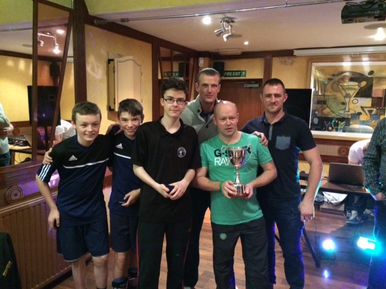

<div class="content">

<div class="container">
<div class="row">

<div class="col-sm-12">
<div class="jumbotron home-jumbo"> 
<h3>Latest News</h3>

  
<div class="news-item col-md-12">
<div class="col-sm-4"></div>
<div class="col-sm-8">
<p><strong>Grampian Emerald would like to thank everyone who attended and supported our five aside tournament and charity night on November 15th.</strong></p>    
<p>The day was a great success and and the club are pleased to announce £700 was raised, with the proceeds going to buying Christmas presents for local children and handing out at Aberdeen Sick Childrens hospital.</p>
<a class="btn btn-success" href="gallery">View Gallery</a>    
    
</div>  
</div> 
<div class="news-item col-md-12">  
<p><strong>Grampian Emerald are looking for a DJ (with equpment) and a face painter for our Charity Event on the 15th November 2014.</strong> </p>

<p>As this is a charity event we are hoping to find someone who is willing to do it for free or for a small fee.</p>
<p>If you, or anyone you know, might be interested pleae contact the club on 07881 454122 as soon as possible.</p>
</div> 
    
<div class="news-item col-md-12">     
<div class="col-sm-3">

</div>

<p><strong>Grampian Emerald will be holding their annual Fred Smith five aside charity day on the 15th November at strikers in Bridge of Don. 2pm KO till 4pm.</strong> </p>

<p>Text the bus phone if you're interested in entering a team. Cost is £35 per team. Five players two subs. Extra subs are £5 each. 
Disco and charity raffle from 5pm at Kittybrewster lounge. (Buffet will be served).</p>
<p>Meeting up from 12.30 at the Kittybrewster where a coach will take you over to strikers.</p>
<p>This year all proceeds will go to buying Christmas presents for local children and handing out at Aberdeen Sick Childrens hospital.</p>
<p>Raffle prizes would be greatly appreciated.</p>    
    
<h4>Still Spaces Available - Please text the club phone to enter your team.</h4>
</div>     


    
</div>      
</div>      
</div>    
</div>
    
 

  

 
</div>    